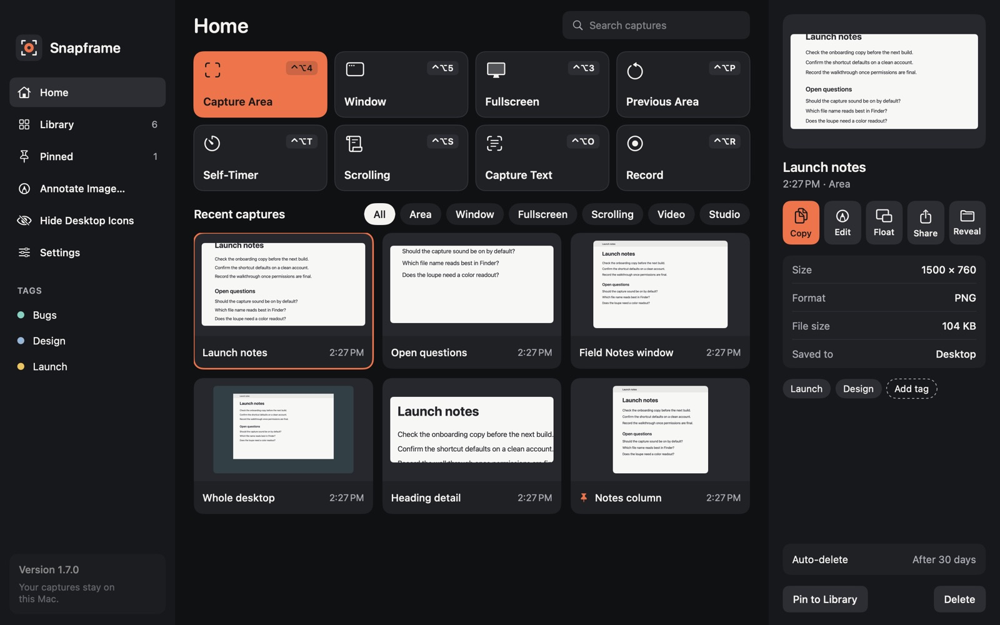
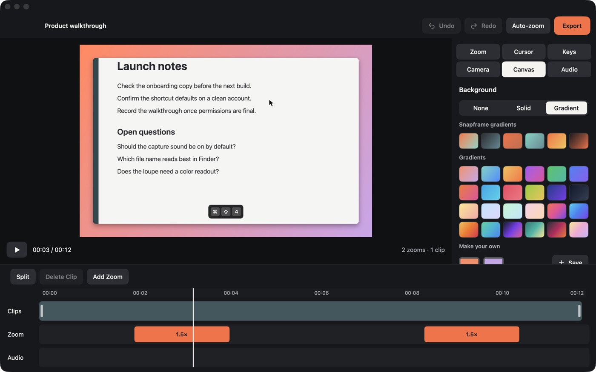
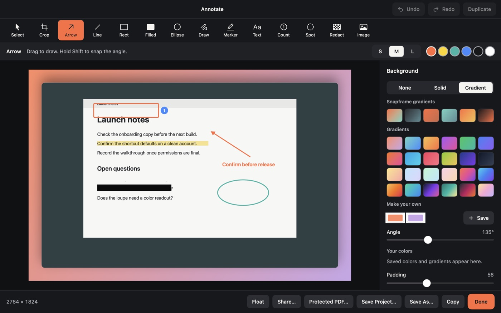
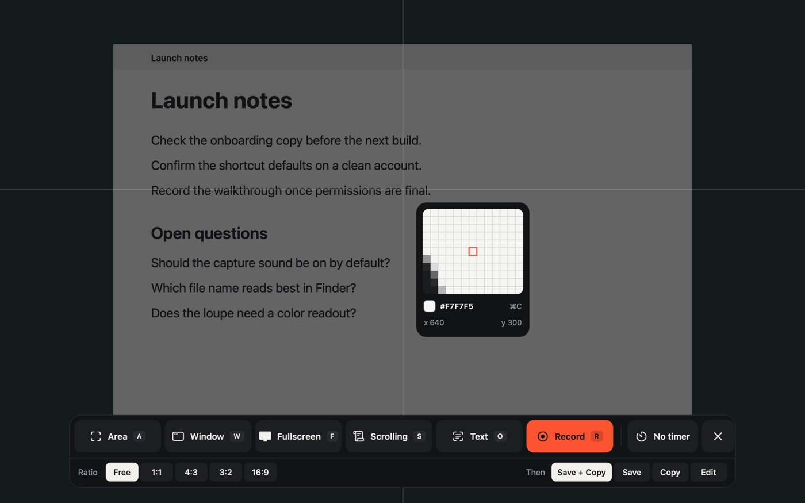
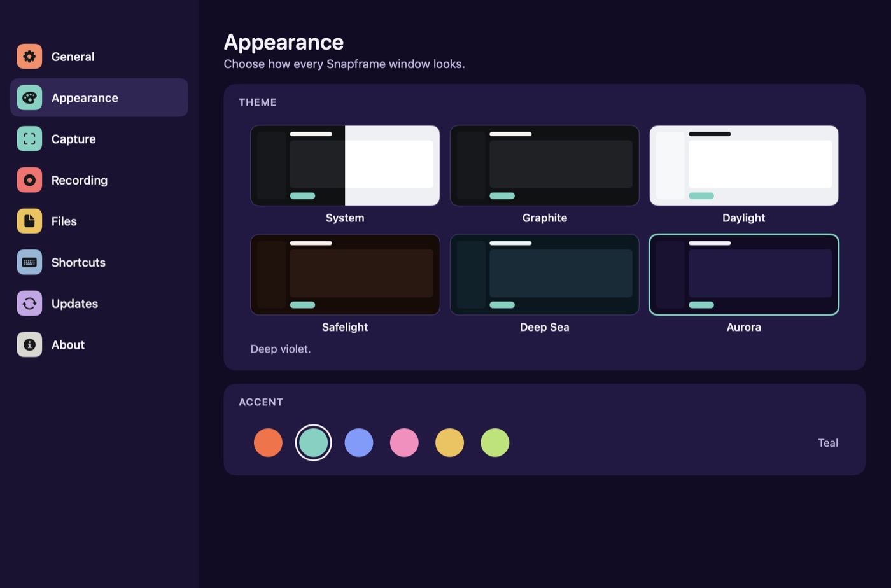
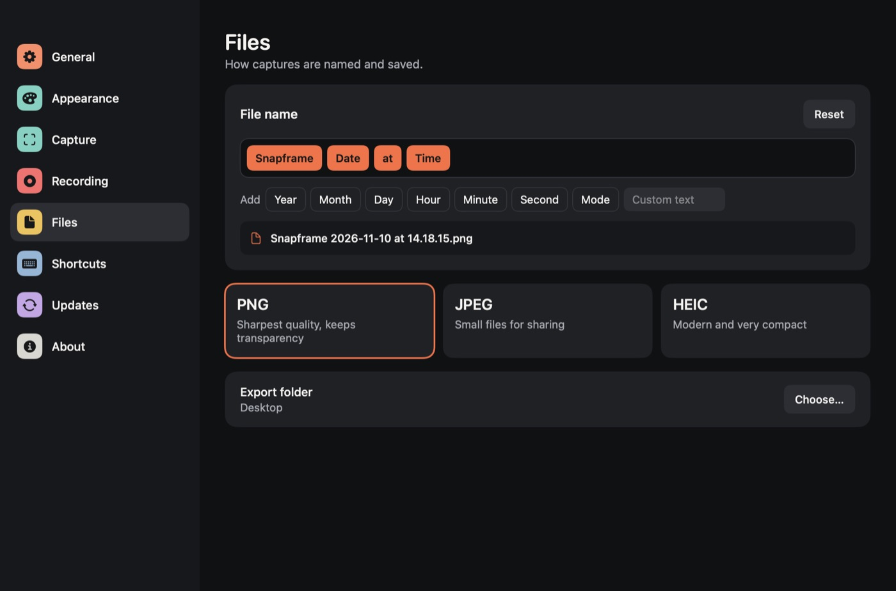
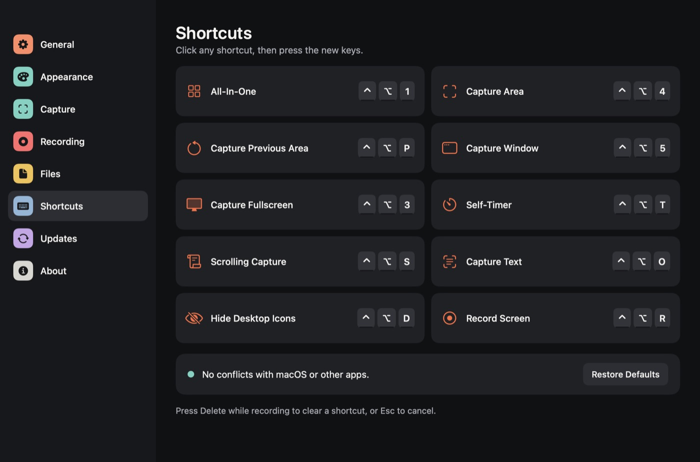

Capture
Select exactly what you mean.
Freeze the screen, snap to windows and read any pixel with the loupe.
For macOS 14 and later
Screenshots, annotation, screen recording and a video editor in one menu-bar app. Every feature is free. There are no accounts and no cloud.
Apple silicon and Intel. In-app updates included.

Saved and copied

What it does
Capture
Freeze the screen, snap to windows and read any pixel with the loupe.
Text and QR codes
Recognition runs on your Mac, so nothing is sent anywhere.
Scrolling capture
Sidebars and fixed headers stay out of the result.
Annotate
Arrows, numbered steps, spotlights and redaction that really removes the pixels.
Record
MP4 or GIF with separate audio tracks, and recovery if your Mac crashes mid-take.
Preview card
Pick Classic buttons or a clean card with controls that appear on hover.
Backgrounds
Solids and gradients for Annotate and Studio. Click one to see it.
A sample of the 78 in the app. You can also make and save your own.
Floating pins
Keep captures above every window. Resize them, or make them see-through.
Studio
Your cursor, clicks and camera are kept apart from the screen, so nothing is baked in.
Themes
Six themes and six accent colors change every window. Try them here.
A closer look






Everything included
snapframe:// automation links, with your approval.snapframe projectsKeyboard first
The defaults leave the macOS screenshot keys alone, and you can change any of them.
Privacy
Snapframe has no accounts, uploads, online models, analytics or crash reporting. This website doesn't track you either.
Install
Snapframe is signed but not notarized by Apple, so macOS asks you to approve it once.
Questions
Yes. Every feature is included, with no tiers, subscriptions or license keys.
Apple's notarization requires a paid developer membership. You approve Snapframe once in System Settings, and updates after that install inside the app.
No. Updates replace the app in place, so your settings, shortcuts, library and permissions stay as they are.
Only a check for new versions on GitHub. Captures, recognized text and recordings stay on your Mac unless you choose to share them.
Only with your approval. snapframe:// links ask first, and you can always allow or block them in Settings.
Inside the editor a redaction is still movable. When you press Done or save a project, the original pixels are destroyed. Files you already saved elsewhere aren't changed.
Changelog
Every feature is free. No accounts, no cloud, ready in a minute.